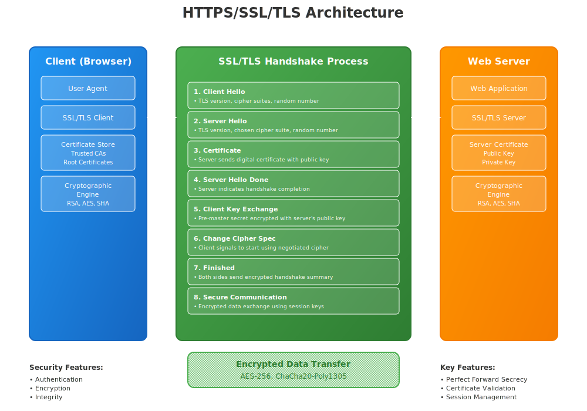

TLS
Transport Layer Security - Modern Internet Encryption
The Successor to SSL and Foundation of Web Security

TLS Definition
TLS (Transport Layer Security) is a cryptographic protocol that provides secure communications over a computer network, serving as the modern successor to SSL and the foundation for HTTPS, email security, and other secure protocols.
Core Functions:
- Authentication: Verify server and optionally client identity
- Confidentiality: Encrypt data to prevent eavesdropping
- Integrity: Detect message tampering or corruption
- Forward Secrecy: Protect past communications if keys are compromised
- Replay Protection: Prevent replay attacks
Position: TLS operates between the transport layer (TCP) and application layer (HTTP, SMTP, etc.)
TLS Evolution from SSL
Historical Timeline:
SSL 1.0 (1994): Never released (security flaws)
SSL 2.0 (1995): First public release by Netscape
• Multiple security vulnerabilities
• Deprecated in 2011
SSL 3.0 (1996): Complete redesign
• Foundation for TLS
• POODLE vulnerability (2014)
• Deprecated in 2015
TLS 1.0 (1999): RFC 2246
• Based on SSL 3.0 with improvements
• Deprecated in 2021
TLS 1.1 (2006): RFC 4346
• Protection against CBC attacks
• Deprecated in 2021
TLS 1.2 (2008): RFC 5246
• Current widespread standard
• Support for modern cipher suites
TLS 1.3 (2018): RFC 8446
• Major protocol overhaul
• Improved security and performance
TLS Version Comparison
TLS 1.0/1.1:
- Status: Deprecated
- Security: Multiple vulnerabilities
- Performance: 2-RTT handshake
- Support: Legacy only
TLS 1.2:
- Status: Current standard
- Security: Strong when configured properly
- Performance: 2-RTT handshake
- Support: Universal
TLS 1.3:
- Status: Latest standard
- Security: Enhanced security
- Performance: 1-RTT handshake
- Support: Growing adoption
Future:
- Post-Quantum: Quantum-resistant
- 0-RTT: Zero round-trip time
- QUIC: UDP-based transport
- HTTP/3: Next-gen web
TLS 1.2 Handshake Process
TLS 1.2 Full Handshake (2-RTT):
Client → Server: Client Hello
• TLS version, cipher suites, random number
• Extensions (SNI, ALPN, etc.)
Server → Client: Server Hello + Certificate + Key Exchange
• Chosen TLS version and cipher suite
• Server certificate chain
• Server key exchange (if needed)
• Certificate request (optional)
• Server Hello Done
Client → Server: Key Exchange + Change Cipher Spec + Finished
• Client key exchange (pre-master secret)
• Client certificate (if requested)
• Certificate verify (if client cert)
• Change cipher spec
• Encrypted handshake message
Server → Client: Change Cipher Spec + Finished
• Change cipher spec
• Encrypted handshake message
Result: Secure channel established, application data can flow
TLS 1.3 Major Improvements
Performance Enhancements:
- 1-RTT Handshake: Faster connection setup
- 0-RTT Resumption: Instant resume (with caveats)
- Simplified Negotiation: Fewer round trips
- Encrypted Extensions: More data protected
Security Improvements:
- Perfect Forward Secrecy: Always enabled
- Authenticated Encryption: Only AEAD ciphers
- Simplified Cipher Suites: Removed weak options
- Encrypted Handshake: More metadata protected
Removed Legacy Features:
- Static RSA key exchange
- Non-AEAD cipher suites
- Compression
- Renegotiation
- Custom DHE groups
TLS 1.3 Handshake Process
TLS 1.3 Full Handshake (1-RTT):
Client → Server: Client Hello + Key Share
• TLS 1.3 version
• Cipher suites (simplified)
• Key shares for supported groups
• Extensions
Server → Client: Server Hello + Encrypted Extensions + Certificate + Finished
• Selected cipher suite
• Key share
• Encrypted extensions
• Server certificate
• Certificate verify
• Finished (encrypted)
Client → Server: Finished
• Client finished (encrypted)
Result: Application data can immediately flow
0-RTT Resumption:
Client can send application data with first message (with replay risk)
TLS Cipher Suites
Cipher Suite: Combination of algorithms for key exchange, authentication, encryption, and message authentication.
TLS 1.2 Format:
TLS_ECDHE_RSA_WITH_AES_128_GCM_SHA256
• ECDHE: Key exchange
• RSA: Authentication
• AES_128_GCM: Encryption + MAC
• SHA256: Handshake hash
TLS 1.3 Format:
TLS_AES_128_GCM_SHA256
• AES_128_GCM: AEAD cipher
• SHA256: Hash function
• Key exchange: Separate negotiation
• Authentication: Certificate-based
Recommended TLS 1.3 Cipher Suites:
• TLS_AES_128_GCM_SHA256
• TLS_AES_256_GCM_SHA384
• TLS_CHACHA20_POLY1305_SHA256
• TLS_AES_128_CCM_SHA256
• TLS_AES_128_CCM_8_SHA256
TLS Key Exchange Methods
| Method |
TLS Version |
Forward Secrecy |
Performance |
Security |
| Static RSA |
1.0-1.2 |
❌ No |
Fast |
Vulnerable if key compromised |
| DHE (Finite Field) |
1.0-1.2 |
✅ Yes |
Slow |
Good with large keys |
| ECDHE |
1.0-1.2 |
✅ Yes |
Fast |
Excellent |
| ECDHE (Required) |
1.3 |
✅ Always |
Very Fast |
Excellent |
| X25519 |
1.3 |
✅ Always |
Very Fast |
State-of-the-art |
Forward Secrecy: Ensures that past communications remain secure even if long-term keys are compromised
Important TLS Extensions
Essential Extensions:
- SNI (Server Name Indication): Virtual hosting support
- ALPN (Application Layer Protocol): HTTP/2, HTTP/3 negotiation
- Supported Groups: Elliptic curves, FFDHE groups
- Signature Algorithms: Supported signature schemes
- Key Share: Ephemeral keys (TLS 1.3)
Security Extensions:
- OCSP Stapling: Certificate status
- Certificate Transparency: SCT timestamps
- Extended Master Secret: Enhanced key derivation
- Encrypt-then-MAC: Improved MAC verification
- Record Size Limit: Fragment size control
TLS 1.3 Extensions: Pre-shared Key, Early Data, Cookie, Certificate Authorities, Post-handshake Authentication
TLS Record Protocol
TLS Record: Low-level protocol that encapsulates higher-level protocols (handshake, application data, alerts, change cipher spec).
TLS Record Format:
TLS 1.2 Record:
| Type (1) | Version (2) | Length (2) | Data (variable) |
Types:
• 20: Change Cipher Spec
• 21: Alert
• 22: Handshake
• 23: Application Data
TLS 1.3 Changes:
• All records after ServerHello are encrypted
• Content type hidden in encrypted payload
• Outer content type always "Application Data"
• Real content type in encrypted padding
Maximum Record Size: 2^14 bytes (16,384 bytes)
TLS Configuration Best Practices
- Use Modern TLS Versions: TLS 1.2 minimum, prefer TLS 1.3
- Disable Legacy Protocols: No SSL 2.0/3.0, TLS 1.0/1.1
- Strong Cipher Suites: AEAD ciphers only, perfect forward secrecy
- Proper Certificate Chain: Complete, trusted certificate chain
- Enable HSTS: HTTP Strict Transport Security
- OCSP Stapling: Improve performance and privacy
- Session Management: Secure session resumption
- Key Management: Regular key rotation, secure storage
Testing: Use SSL Labs, testssl.sh, or similar tools to validate configuration
TLS Vulnerabilities and Attacks
| Attack |
Year |
Affected Versions |
Description |
| BEAST |
2011 |
TLS 1.0 |
CBC cipher attack |
| CRIME |
2012 |
TLS with compression |
Compression ratio attack |
| Lucky 13 |
2013 |
TLS 1.0-1.2 CBC |
Timing attack on CBC |
| POODLE |
2014 |
SSL 3.0, TLS CBC |
Padding oracle attack |
| FREAK |
2015 |
TLS with export ciphers |
Weak encryption forced |
| Logjam |
2015 |
TLS with weak DH |
Weak Diffie-Hellman |
| SWEET32 |
2016 |
64-bit block ciphers |
Birthday attack on 3DES |
| ROBOT |
2017 |
TLS with RSA PKCS#1 |
Bleichenbacher attack |
TLS 1.3 Resistance: TLS 1.3 eliminates most of these attack vectors through design improvements
TLS Performance Optimization
Handshake Optimization:
- TLS 1.3: 1-RTT vs 2-RTT handshake
- Session Resumption: PSK, session tickets
- 0-RTT Data: Early data (with replay risks)
- OCSP Stapling: Avoid OCSP lookups
- Certificate Chain: Minimize chain length
Runtime Optimization:
- Hardware Acceleration: AES-NI, ECDH acceleration
- Connection Reuse: HTTP/2, connection pooling
- Cipher Selection: ChaCha20-Poly1305 for mobile
- Record Size: Optimize for application needs
- False Start: Send data before handshake complete
Measurement: Monitor handshake time, connection establishment, and data transfer rates
TLS Implementation Libraries
| Library |
Language |
TLS 1.3 |
Key Features |
| OpenSSL |
C |
✅ 1.1.1+ |
Most widely used, comprehensive |
| BoringSSL |
C |
✅ Yes |
Google fork, simplified API |
| LibreSSL |
C |
✅ Yes |
OpenBSD fork, security focused |
| wolfSSL |
C |
✅ Yes |
Embedded systems, small footprint |
| GnuTLS |
C |
✅ Yes |
GNU project, LGPL license |
| mbedTLS |
C |
✅ Yes |
ARM, IoT focused |
| rustls |
Rust |
✅ Yes |
Memory safe, modern design |
TLS Monitoring and Debugging
Testing Tools:
- SSL Labs: Online TLS configuration testing
- testssl.sh: Command-line TLS scanner
- nmap: Network scanning with SSL scripts
- sslyze: Fast SSL configuration scanner
- OpenSSL s_client: Manual connection testing
Monitoring Metrics:
- Handshake Latency: Connection establishment time
- Cipher Distribution: Which ciphers are used
- Protocol Versions: TLS version adoption
- Certificate Health: Expiration, validation errors
- Error Rates: Handshake failures, alerts
OpenSSL Debug Commands:
# Test TLS 1.3 connection
openssl s_client -connect example.com:443 -tls1_3
# Show certificate chain
openssl s_client -connect example.com:443 -showcerts
# Test specific cipher suite
openssl s_client -connect example.com:443 -cipher 'ECDHE+AESGCM'
Future of TLS
- Post-Quantum TLS: Quantum-resistant key exchange and signatures
- TLS 1.4: Potential future version with further improvements
- Encrypted ClientHello: Hide more metadata from observers
- Compact TLS: Optimized for IoT and constrained devices
- QUIC Integration: TLS over UDP for HTTP/3
- Certificate Transparency v2: Enhanced certificate monitoring
- Delegated Credentials: Short-lived certificate delegation
- Automated Certificate Management: ACME protocol evolution
Key Takeaways
- TLS is the modern successor to SSL and foundation of internet security
- TLS 1.3 provides significant security and performance improvements
- Proper configuration is essential for security and performance
- Forward secrecy should always be enabled in modern deployments
- Regular monitoring and updates are crucial for maintaining security
- Legacy versions (TLS 1.0/1.1) should be disabled
- Certificate management is a critical operational component
- Future developments will focus on quantum resistance and metadata protection
Remember: TLS security depends on proper implementation, configuration, and ongoing maintenance - not just the protocol version
Thank You
Questions & Discussion
Next: VPNs (Virtual Private Networks)